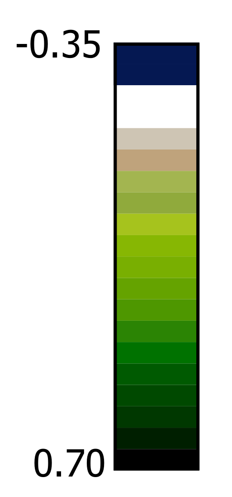

Végétation détectée pendant 2021
Cette carte est extraite des images Sentinel-2 prises pendant 2021
239 images prises sur le Grand Tunis
192 images prises sur Sfax
Le code sur Google Earth Engine est accessible
ici
(Vous devez disposer d'un compte GEE pour consulter le code)
